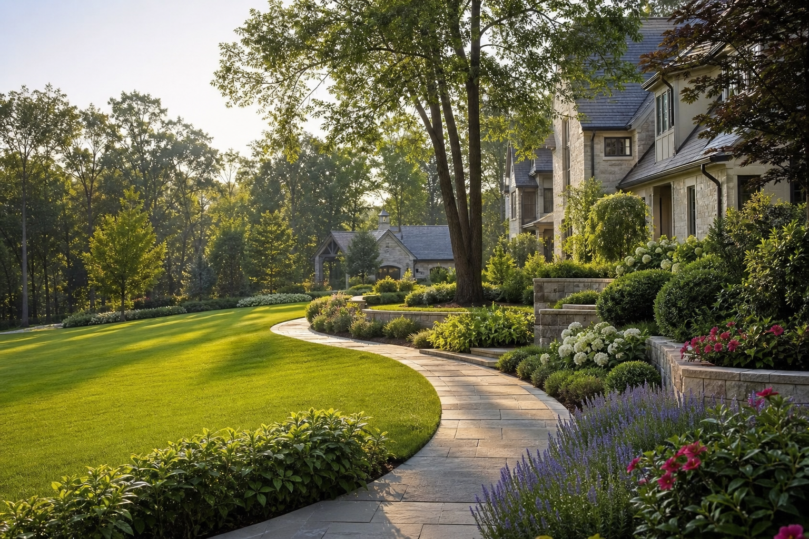

Work
Finished properties with structure, softness, and staying power.

Featured Work
Outdoor rooms that feel established from day one.
Our team coordinates stonework, planting, turf repair, drainage details, and maintenance handoff so the final property reads as one finished environment.
View Finished Properties